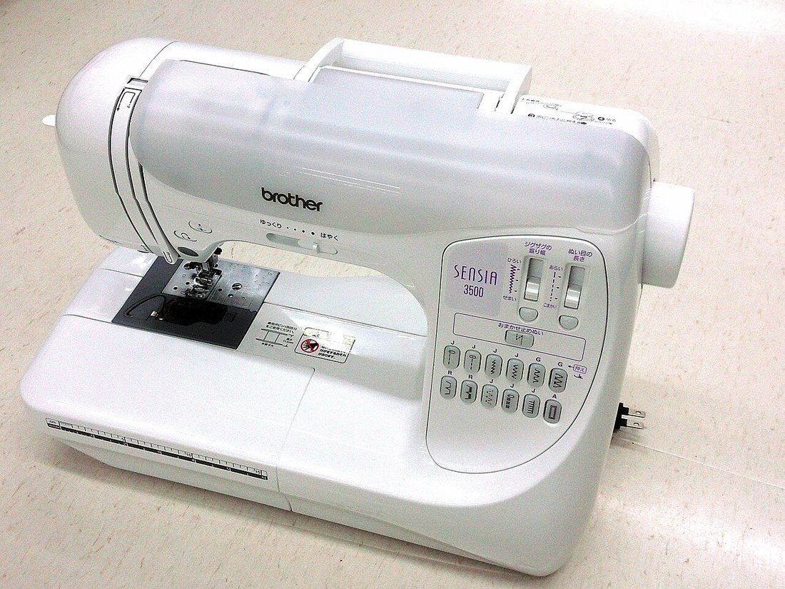
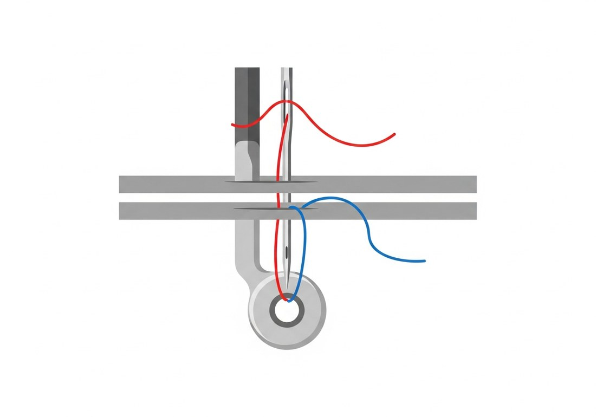
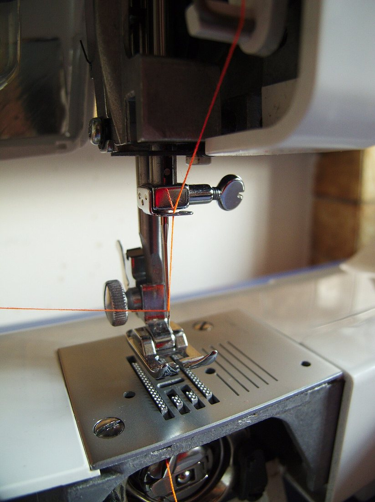
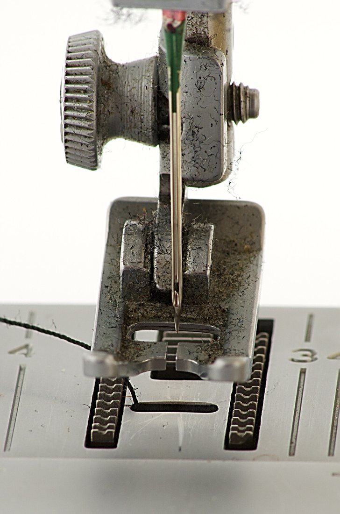
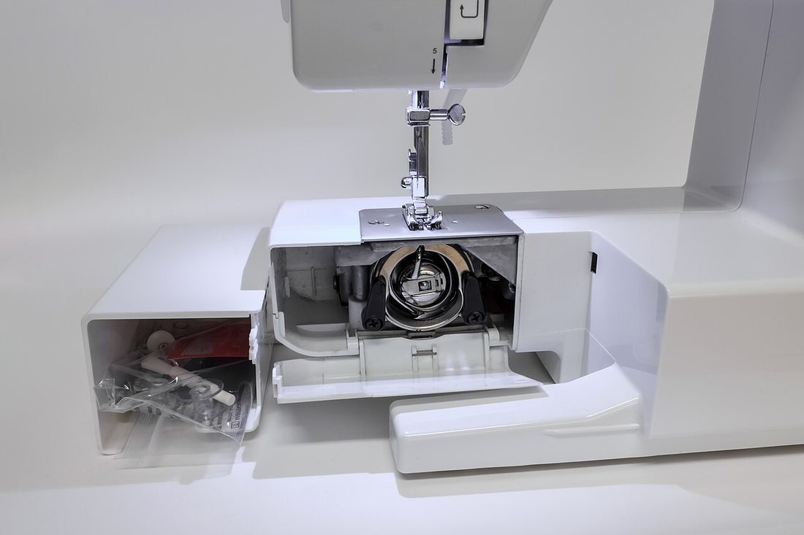
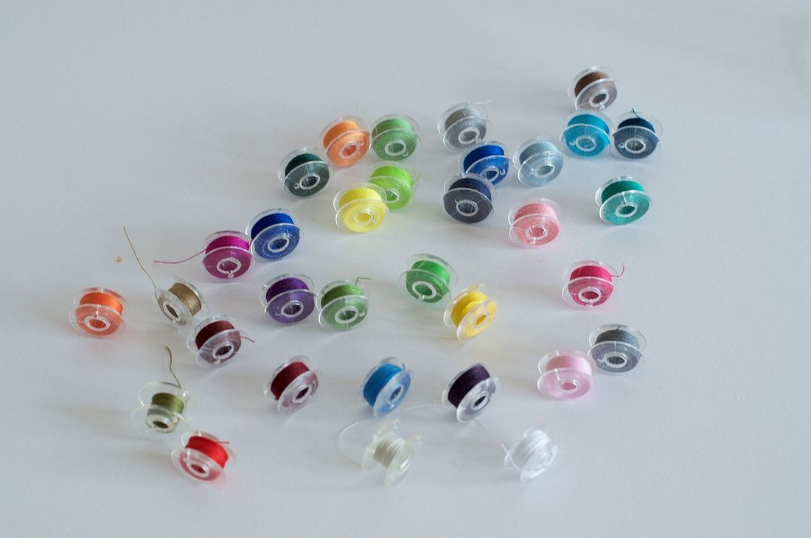
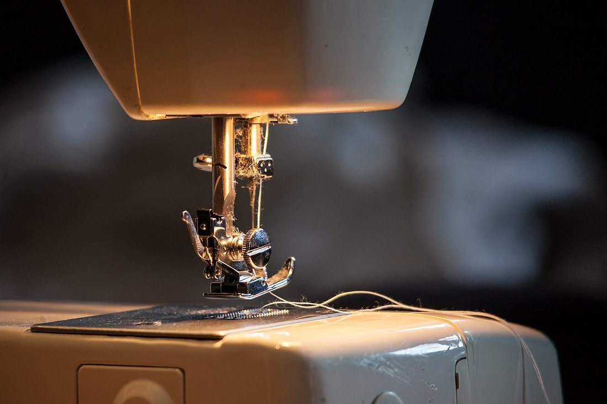

Көркем еңбек · 3-бөлім · Тігін ісі Art & Craft · Section 3 · Sewing Художественный труд · Раздел 3 · Швейное дело
🧵 Тігін машинасы: құрылысы және жұмыс тәсілдері
🧵 The Sewing Machine: Structure & Working Techniques
🧵 Швейная машина: устройство и приёмы работы
Машинаның негізгі бөліктері, екі жіптің өрімі және қауіпсіз жұмыс ережелері. The machine's main parts, how the two threads lock, and safe-work rules. Главные части машины, как переплетаются две нити и правила безопасной работы.
Тігін машинасы — матаны қолмен тіккеннен әлдеқайда жылдам әрі берік етіп тігетін құрал. Ол бір емес, екі жіппен жұмыс істейді: жоғарғы жіп инеден түседі, төменгі жіп шүлдіктен (шпулька) келеді. Әр шаншуда ине матаны тесіп өтіп, жоғарғы жіптің ілмегін астына апарады, ал айналмалы ілгек (челнок) оны төменгі жіппен ілмектеп қосады. Осылай тор тігіс (челночный стежок) пайда болады — ол матаның екі қабатының дәл ортасында жасырын байланады, сондықтан тігіс мықты болады. The sewing machine joins fabric far faster and more strongly than hand sewing. It works not with one but with two threads: the upper thread comes from the needle, the lower thread from the bobbin. With every stitch the needle pierces the fabric and carries a loop of the upper thread below, where a rotary hook (shuttle) links it with the lower thread. This forms the lockstitch — the two threads knot exactly between the fabric layers, hidden inside, which is why the seam is so durable. Швейная машина соединяет ткань гораздо быстрее и прочнее, чем ручное шитьё. Она работает не с одной, а с двумя нитями: верхняя нить идёт от иглы, нижняя — со шпульки. На каждом стежке игла прокалывает ткань и уводит петлю верхней нити вниз, где вращающийся челнок сцепляет её с нижней нитью. Так образуется челночный стежок — нити переплетаются точно между слоями ткани, спрятанные внутри, поэтому шов получается прочным.
Машинаның құрылысы Structure of the Machine Устройство машины
🔍 Суретті үлкейту үшін басыңыз. 🔍 Tap the photo to enlarge it. 🔍 Нажмите на фото, чтобы увеличить.

Инені қолмен жоғары-төмен жылжытады.Moves the needle up and down by hand.Вручную поднимает и опускает иглу.
Жоғарғы жіпті матадан өткізеді.Carries the upper thread through the fabric.Проводит верхнюю нить сквозь ткань.
Матаны басып, тегіс жылжытады.Holds the fabric down and steady.Прижимает ткань, ведёт её ровно.
Матаны автоматты түрде алға итереді.Push the fabric forward automatically.Автоматически продвигают ткань вперёд.
Жоғарғы жіптің тартылуын реттейді.Sets the tightness of the upper thread.Задаёт натяжение верхней нити.
Төменгі жіпті беріп, тігісті бекітеді.Supply the lower thread, lock the stitch.Дают нижнюю нить, закрепляют стежок.
Машинаның жылдамдығын басқарады.Controls the speed of the machine.Управляет скоростью машины.
Тігіс түрі мен ұзындығын таңдайды.Chooses stitch type and length.Выбирает вид и длину строчки.
Екі жіп: тор тігіс қалай түзіледі Two Threads: How the Lockstitch Forms Две нити: как образуется челночный стежок

қызыл — жоғарғы жіп · көк — төменгі жіпred — upper thread · blue — lower threadкрасная — верхняя нить · синяя — нижняя нить
Бір тігістің 4 сәті:4 moments of one stitch:4 момента одного стежка:
Шаншу.Pierce.Прокол. Ине жоғарғы жіппен матаны тесіп, төмен түседі.The needle takes the upper thread down through the fabric.Игла с верхней нитью прокалывает ткань и опускается.
Ілмек.Loop.Петля. Ине көтерілгенде, жіптен кішкене ілмек қалады.As the needle rises, a small loop of thread is left below.Когда игла поднимается, снизу остаётся петелька нити.
Ілу.Catch.Захват. Айналмалы ілгек (челнок) ілмекті іліп алады.The rotary hook (shuttle) catches that loop.Вращающийся челнок подхватывает эту петлю.
Байлау.Lock.Сцепление. Ілмек төменгі жіпті орап, тігіс мата ортасында бекиді.The loop wraps the lower thread; the stitch locks inside the fabric.Петля обводит нижнюю нить — стежок затягивается внутри ткани.
Жұмыс бөліктерін жақыннан көру Working Parts Up Close Рабочие узлы крупным планом
🔍 Кез келген суретті басып үлкейтіңіз. 🔍 Tap any photo to enlarge it. 🔍 Нажмите на любое фото, чтобы увеличить.




Тігуді бастаудың тәртібі How to Start Sewing — in Order Порядок начала работы
Орынды дайында.Set up.Подготовь место. Дұрыс отыр, аяғыңды педальға қой, жарықты түзе.Sit upright, place your foot on the pedal, adjust the light.Сядь прямо, поставь ногу на педаль, направь свет.
Жоғарғы жіпті өткіз.Thread the top.Заправь верхнюю нить. Катушкадан реттегіш пен иненің көзіне дейін.From the spool through the tension to the needle eye.От катушки через регулятор к ушку иглы.
Төменгі жіпті ал.Bring up the bobbin.Подними нижнюю нить. Маховикпен инені бір айналдырып, төменгі жіпті жоғары шығар.Turn the wheel once to draw the lower thread up.Поверни маховик, чтобы вытянуть нижнюю нить наверх.
Матаны қой.Place fabric.Положи ткань. Инені көтеріп, матаны табан астына сал, екі жіпті артқа қарай қой.Raise the needle, slide fabric under the foot, lay both threads back.Подними иглу, положи ткань под лапку, нити отведи назад.
Табанды түсір.Lower the foot.Опусти лапку. Тіге бастамас бұрын табанды міндетті түрде түсір.Always lower the presser foot before you sew.Перед строчкой обязательно опусти лапку.
Бекіт.Backstitch.Закрепи. Басында 2–3 тігіс кері жүріп, жіптің ұшын бекіт.Sew 2–3 stitches in reverse to lock the start.Сделай 2–3 стежка назад, чтобы закрепить начало.
Тегіс тік.Sew steadily.Шей ровно. Педальды ақырын бас, матаны итерме — тісшелер өзі жылжытады.Press the pedal gently; don't pull the fabric — the feed dogs move it.Нажимай педаль плавно, не тяни ткань — её ведёт рейка.
Аяқта.Finish.Заверши. Инені көтер, табанды көтер, матаны артқа алып, жіпті кес.Raise needle and foot, pull fabric back, cut the threads.Подними иглу и лапку, отведи ткань назад, обрежь нити.

Қолмен тігу мен машинаның айырмасы Hand vs. Machine Sewing Ручное шитьё и машина
| Признак | Вручную | На машине |
|---|---|---|
| Скорость | медленно | очень быстро |
| Прочность | зависит от рук | ровная, надёжная |
| Нити | одна нить | две нити (верх + низ) |
| Стежок | разные ручные | челночный, ровный |
| Где удобно | мелкий ремонт | длинные швы, пошив |
| Белгісі | Қолмен | Машинамен |
|---|---|---|
| Жылдамдық | баяу | өте жылдам |
| Беріктік | қолға байланысты | біркелкі, сенімді |
| Жіп | бір жіп | екі жіп (жоғ. + төм.) |
| Тігіс | әртүрлі қол тігісі | тор тігіс, түзу |
| Қолайлы жері | ұсақ жөндеу | ұзын тігіс, тігу |
| Feature | By hand | By machine |
|---|---|---|
| Speed | slow | very fast |
| Strength | depends on skill | even, reliable |
| Threads | one thread | two (upper + lower) |
| Stitch | various hand stitches | lockstitch, even |
| Best for | small repairs | long seams, tailoring |
Қауіпсіз жұмыс ережелері Safe-Work Rules Правила безопасной работы
✋ Саусақты ине астына апарма.Keep fingers from the needle.Не держи пальцы у иглы. Матаны иненің 2–3 см жанынан ұста.Hold the fabric 2–3 cm away from the needle.Держи ткань в 2–3 см от иглы.
📌 Түйреуіштерді ал.Remove pins.Убирай булавки. Ине түйреуішке тиіп сынуы мүмкін.The needle can hit a pin and snap.Игла может попасть в булавку и сломаться.
💇 Шашты жина.Tie back hair.Убери волосы. Ұзын шаш пен кең жең машинаға іліне алады.Long hair or loose sleeves can catch in the machine.Длинные волосы и широкие рукава могут попасть в машину.
👀 Назарыңды берме.Stay focused.Будь внимательна. Жұмыс кезінде сөйлеспе, алаңдама.Don't chat or get distracted while sewing.Не отвлекайся и не разговаривай во время шитья.
🔌 Тоқтан ажырат.Unplug after use.Отключай от сети. Инені ауыстырар алдында машинаны өшір.Switch off before changing the needle.Перед заменой иглы выключи машину.
🐢 Баяу баста.Start slow.Начинай медленно. Педальды бірден қатты баспа, жылдамдықты біртіндеп қос.Don't floor the pedal — build up speed gradually.Не дави педаль резко, набирай скорость плавно.
💬 Қорытынды 💬 In a nutshell 💬 Главное
Тігін машинасы — екі жіптің үйлесімді жұмысы. Ине жоғарғы жіпті матадан өткізеді, ал челнок оны төменгі жіппен ілмектеп, мата ортасында берік тор тігіс жасайды. Машинаны білу — оның бөліктерін тану, жіпті дұрыс өткізу және қауіпсіздік ережелерін ұстану деген сөз. Сонда тігіс түзу, ал жұмыс қауіпсіз болады. The sewing machine is the teamwork of two threads. The needle carries the upper thread through the fabric, and the shuttle links it with the lower thread to make a strong lockstitch in the middle of the cloth. Knowing the machine means recognising its parts, threading it correctly and following the safety rules. Then your seam stays straight and your work stays safe. Швейная машина — это слаженная работа двух нитей. Игла проводит верхнюю нить сквозь ткань, а челнок сцепляет её с нижней, образуя прочный челночный стежок в середине ткани. Знать машину — значит узнавать её части, правильно заправлять нить и соблюдать правила безопасности. Тогда строчка будет ровной, а работа — безопасной.